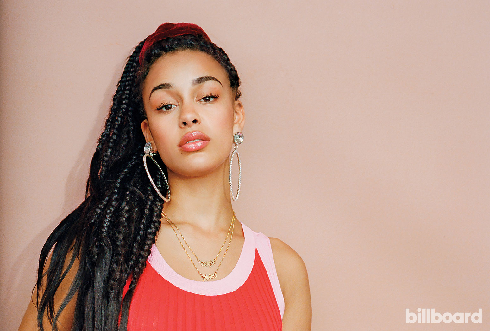

Jorja Smith

Jorja Alice Smith (11 de junho de 1997), conhecida como Jorja Smith é uma cantora e compositora britânica de Walsall, nas Midlands Ocidentais.Smith lançou vários singles desde janeiro de 2016 e colaborou com outros artistas, incluindo Drake, Kali Uchis e Stormzy.Jorja Alice Smith nasceu em 11 de junho de 1997 em Walsall, nas Midlands Ocidentais, filha de pai jamaicano e mãe inglesa.Seu pai, Peter, gestor de recursos humanos, é um ex músico e cantava em um grupo de neo-soul chamado 2nd Naicha antes de Smith nascer, e sua mãe, Jolene, é designer de joias.Smith tem um irmão mais novo, Luca, e é prima do jogador Kemar Roofe do Leeds United.Ela começou a estudar piano aos oito anos com encorajamento do seu pai.Smith ganhou uma bolsa para estudar na Aldridge School, onde aprendeu a tocar o oboé e estudou canto clássico, antes de estudar música para seus exames de A-level.Foi encontrada por um agente aos 15 anos após subir vídeos seus cantando versões no YouTube.Logo após, ela começou a viajar para Londres para compor junto com Maverick Sabre e Ed Thomas, enquanto ainda estudava.Após se formar, mudou para Londres aos 18 anos onde se sustentou trabalhando como barista, e continuou compondo canções.
Smith cresceu escutando reggae, punk, hip-hop e R&B, e compôs sua primeira canção aos 11 anos.Ela diz ter sido"obcecada" com o álbum de estreia de Amy Winehouse Frank durante a adolescência e foi inspirada pela abordagem crua da cantora para com a composição.Smith disse que suas canções são sobre questões sociais: "Quando as coisas estão acontecendo no mundo, acho importante abordá-las, porque, como músico, você pode fazer as pessoas escutarem. Logo que elas apertam o play,você tem a atenção delas."Ela cita Lauryn Hill, Alicia Keys, Mos Def e The Streets como influências.Seu canto já foi comparado com Adele,Alicia Keys e Rihanna.